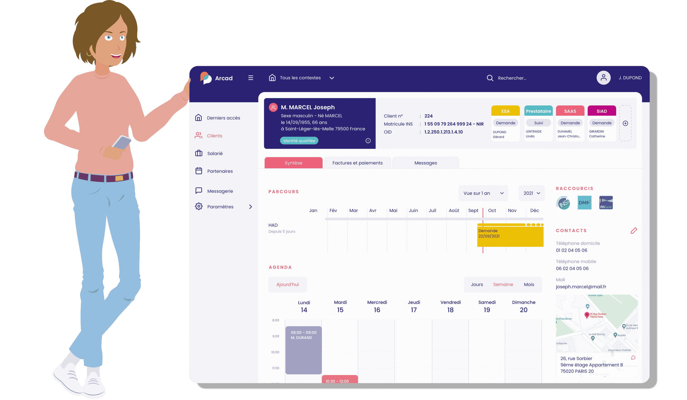
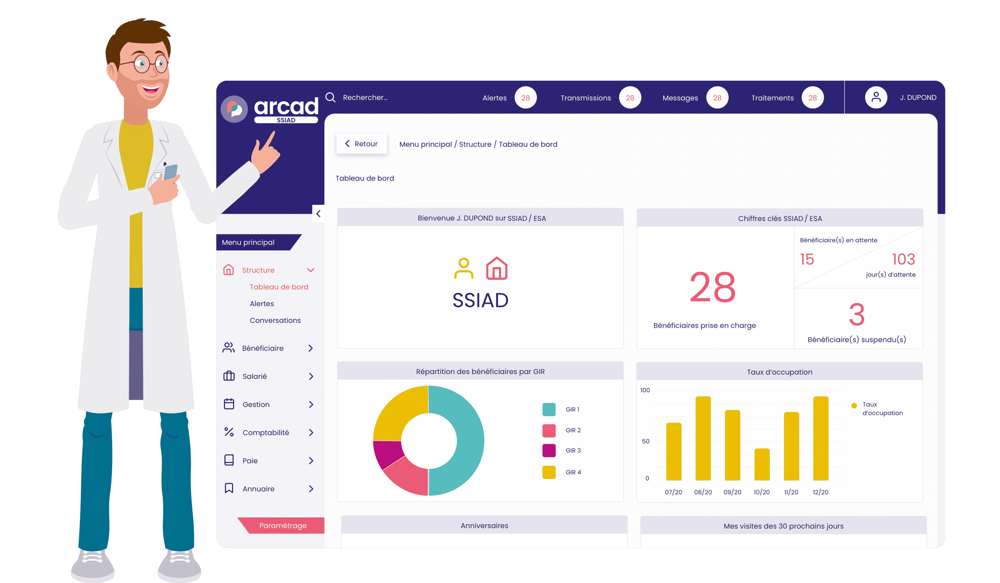
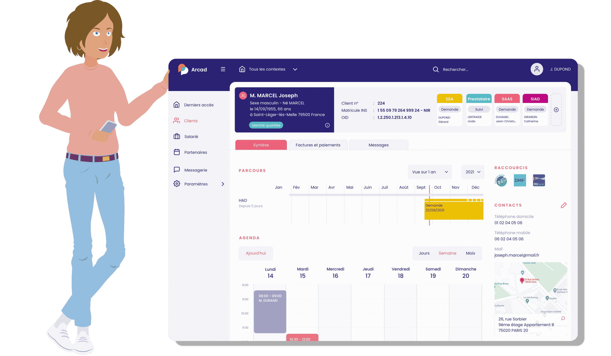
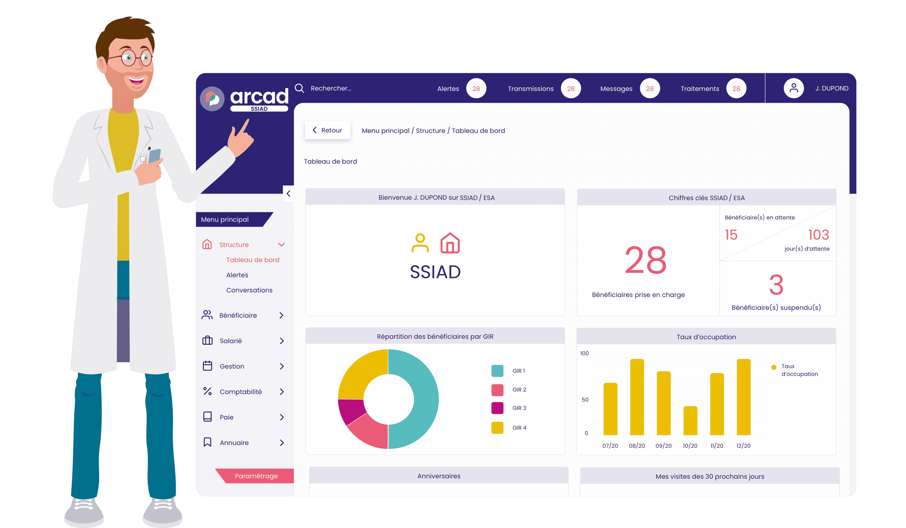

Projet Ségur - Intégration avec l'Application Millésime et Sous-Applications Millésime Action Sociale, SIAD et SMAD
 




Le Ségur du numérique en santé
- Categorie: Millésime
- Pour: Mairie de montrouge (Centre municpalité de santé)
- Projet URL: https://esante.gouv.fr/segur
Le projet Ségur, désormais étendu à notre application phare, Millésime, représente une étape cruciale dans notre engagement envers l'amélioration des services de santé. Cette expansion se matérialise à travers deux sous-applications distinctes de Millésime, à savoir Millésime Action Sociale et Millésime SIAD et SMAD. Bien que ces applications présentent des nuances spécifiques à leurs domaines d'application respectifs, le projet Ségur adopte une approche uniforme, assurant une cohérence dans la mise en œuvre des nouvelles fonctionnalités et configurations.
La connectivité joue un rôle central dans ce projet, établissant une liaison essentielle via un connecteur spécifique vers la plateforme Arcad.
Cette connectivité est minutieusement alignée sur notre mission fondamentale d'accompagner les structures dédiées aux soins, facilitant ainsi l'amélioration quotidienne de la vie de milliers de personnes. C'est dans cette synergie entre technologie et soins que le projet Ségur prend tout son sens, visant à moderniser et optimiser nos pratiques pour répondre aux défis contemporains du secteur de la santé.
À travers les étapes clés de ce projet, nous aborderons de manière détaillée la façon dont nous intégrons les lecteurs CPS, configurons la messagerie professionnelle via Maëlys, et mettons en place le RPPS Plus. Chacune de ces étapes contribue de manière significative à l'évolution de Millésime, renforçant ainsi notre capacité à fournir des soins de qualité et à répondre aux exigences croissantes du secteur de la santé. La constante uniformité dans notre approche reflète notre engagement envers l'excellence et la continuité des services à travers toutes les facettes du projet Ségur, consolidant ainsi notre position en tant qu'acteur majeur dans le domaine de la santé numérique.
Étapes Clés du Projet Ségur Millésime
-
Vérification du Connecteur :
- Audit du connecteur existant pour évaluer son adéquation aux exigences du projet Ségur.
- Identification des ajustements nécessaires.
-
Réajustement des Objectifs :
- Révision des objectifs pour intégrer les nouvelles exigences, y compris les lecteurs CPS et la messagerie professionnelle.
-
Personnalisation pour Action Sociale et SIAD/SMAD :
- Collaboration avec les équipes de développement pour personnaliser les applications selon les besoins spécifiques du projet.
-
Acquisition et Installation :
- Identification des fournisseurs des lecteurs CPS conformes aux normes.
- Coordination avec les équipes IT pour l'acquisition, l'installation, et la configuration des lecteurs.
-
Sessions de Formation :
- Conception et planification de sessions de formation détaillées sur l'utilisation des lecteurs CPS et les fonctionnalités de la messagerie professionnelle via Maëlys.
- Développement de supports de formation.
-
Déploiement :
- Intégration de Mailiz
- Configuration de Mailiz pour permettre une messagerie professionnelle efficace.
- Tests de compatibilité avec les autres systèmes.
-
Préconfiguration :
- Analyse des besoins spécifiques pour la délégation des droits dans le DMP.
- Mise en œuvre des paramètres de préconfiguration nécessaires.
-
Tests de Performance :
- Création de scénarios de test exhaustifs pour évaluer les performances des nouvelles configurations.
- Identification et résolution des problèmes potentiels.
-
Validation Utilisateur :
- Organisation de sessions de validation utilisateur pour obtenir des commentaires directs.
- Ajustements basés sur les retours utilisateurs.
-
Planification du Déploiement :
- Révision du plan de déploiement pour intégrer les nouvelles configurations.
- Déploiement progressif pour minimiser les perturbations.
-
Campagne de Communication :
- Développement de supports de communication clairs et informatifs.
- Diffusion régulière d'informations pour sensibiliser les utilisateurs aux changements.
-
Collecte de Retours Utilisateurs :
- Mise en place de mécanismes de collecte des retours utilisateurs, avec des canaux dédiés.
- Analyse des retours pour résoudre rapidement les problèmes éventuels.
-
Optimisation Continue :
- Évaluations régulières pour identifier des opportunités d'amélioration continue.
- Mise en place de correctifs et d'améliorations en temps réel.
-
Coordination avec les Éditeurs :
- Coordonner avec les éditeurs concernés pour garantir que les nouvelles configurations sont couvertes par les financements Ségur.
-
Suivi des Financements :
- Assurer un suivi précis des ressources financières allouées pour les nouvelles configurations.